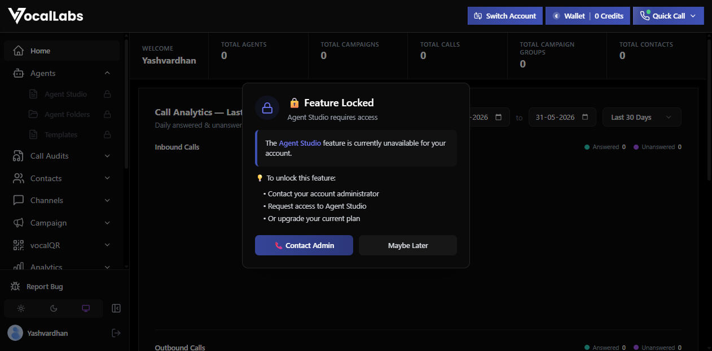
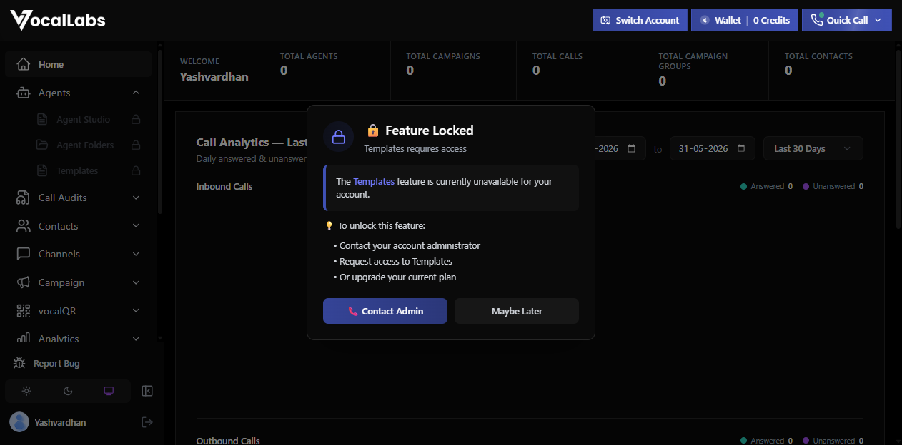
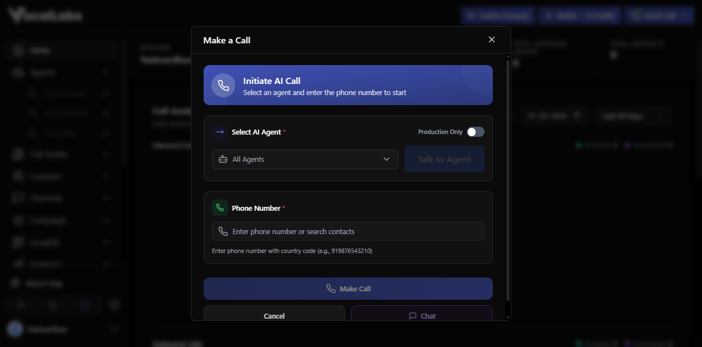
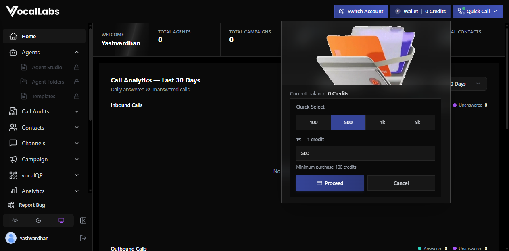
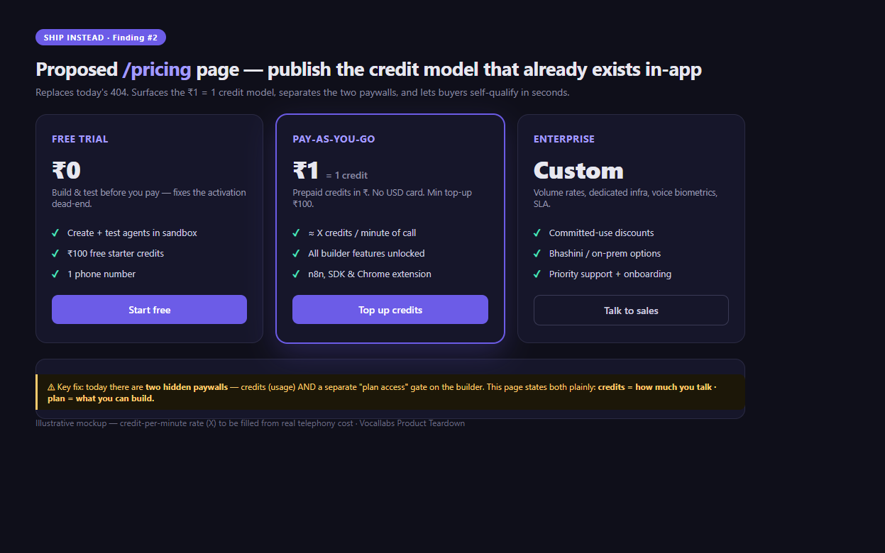
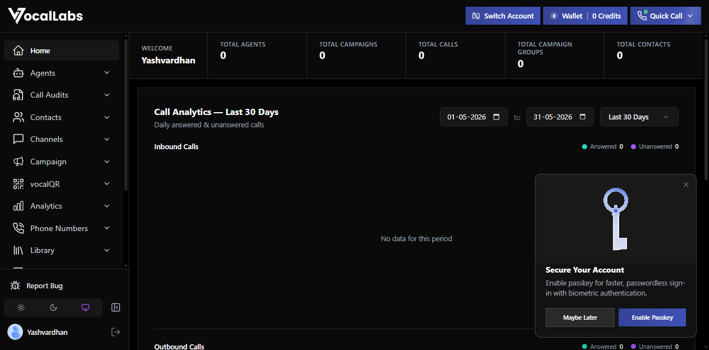
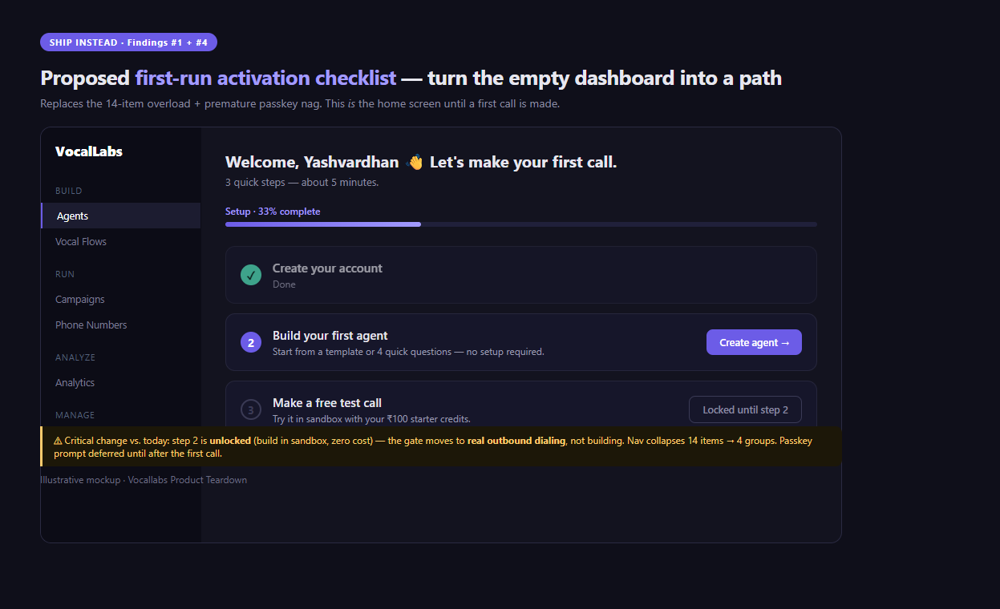
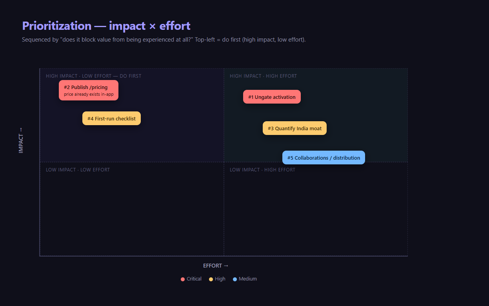

Yashvardhan Singh · 31 May 2026 · Product Intern
Tested live: marketing site · logged-in app (fresh account, v2.1.6) · API docs · 8-competitor benchmark
The technology looks strong: 99.9% uptime, sub-300ms, multi-model routing.
But a brand-new user cannot actually use it. Activation is broken before value is ever seen.
So I didn't just review the website. I signed up, tried to build an agent and make a call, and that journey is the teardown.
| # | Pillar | Feedback | Sev |
|---|---|---|---|
| 1 | Features / Activation | New users hit "Feature Locked" on the agent builder; core loop unreachable | Crit |
| 2 | GTM / Pricing | /pricing 404s, yet a real ₹1 = 1 credit model lives in-app; two paywalls | Crit |
| 3 | Competition | "India-first" asserted, unquantified and out-gunned by Sarvam/Gnani/Smallest | High |
| 4 | UX | Post-login is 14-item nav overload plus passkey nag, not guidance | Med |
| 5 | Collaborations | Real distribution (n8n, Chrome ext) buried; India AI stack unused | Med |
One feedback per pillar, deliberately not all in one area.
Sign up, try to build (locked), try a template (locked), try to call (needs an agent you can't make): dead end.
Pillar: Features / Services · Severity: Critical · Effort: Medium



Time-to-first-value is infinite for self-serve. Contradicts the SDK/n8n/Chrome-ext PLG strategy. Retell gives $10 free credits; Smallest builds an agent in 5 min, so devs activate there instead.
Ungate creation, gate consumption. Let anyone build and test in sandbox; require credits only to dial real outbound. Add one starter template and a 5-min guided "first agent" flow.
Tradeoff: gating is likely intentional (cost/abuse), but it's in the wrong place. Block dialing, not building.
Pillar: GTM / Pricing · Severity: Critical · Effort: Low (highest ROI per effort)

Self-serve buyers can't qualify themselves; rivals publish per-minute rates. Two paywalls (credits = usage, "plan access" = features): pay ₹100 and you still can't build. Refund/trust risk.
Publish the pricing that already exists plus a credits calculator. Label the two paywalls plainly. Give free starter credits (like Retell's $10).

Homepage leads with generic infra ("Sub-300ms", "Any Protocol. One API") that could be Twilio. The moat ("India-first") is never quantified: no language count, no demo.
On paper a buyer sees Sarvam (22 langs, govt-backed), Gnani (40+/12 Indic, 30M daily calls), Smallest (under 100ms), and Vocallabs loses the comparison it should win.
Quantify the moat plus a 30-sec code-mixed audio demo. Pick a wedge: collections/BFSI (Skit-style, but self-serve) or SMBs the enterprise players ignore.
Full 8-competitor benchmark plus Porter's Five Forces in research/competitors.md
14-item sidebar; three overlapping agent surfaces (Agent Studio vs Vocal Flows vs Templates); opaque names (vocalQR, EazyReach); a passkey nag before any value; no first-run guide.

Compounds #1: maximum cognitive load at the exact moment the user is already stuck behind a locked builder. Reads as an internal power-tool, not a self-serve product.
First-run checklist as the home screen until done. Group 14 items into Build / Run / Analyze / Manage. Defer passkey.

An n8n node (confirmed, GitHub Vocallabsai) and a Chrome extension exist, but aren't leveraged as growth channels. No Zapier/Make. Bhashini / Sarvam / AI4Bharat unused.
A PLG product with no working self-serve activation and no leveraged distribution has no growth engine at all.
Get the n8n node verified plus publish template workflows (discovery surface). Integrate Bhashini to unlock gov/BFSI procurement rivals can't match. Channel play for the collections wedge.

Sequenced by "does it block value from being experienced at all?" then effort.
| When | Ship |
|---|---|
| 30 days | Publish /pricing (#2) · ungate sandbox agent and 1 template (#1) · first-run checklist (#4) |
| 60 days | Instrument activation funnel and move first-agent rate · quantified India-first page plus audio demo (#3) |
| 90 days | Verified n8n listing and workflows plus Bhashini spike (#5) · pick one wedge vertical |
"Whoever joins owns and executes these from Day 1." I'd start with the ₹0-cost, highest-leverage one: publish the price that already exists.
Net: strong tech, broken first-mile. Fix activation and price transparency, and the rest of the funnel finally gets a chance to work.
Full report: VOCALLABS_PRODUCT_TEARDOWN.md · evidence in screenshots/ · research in research/